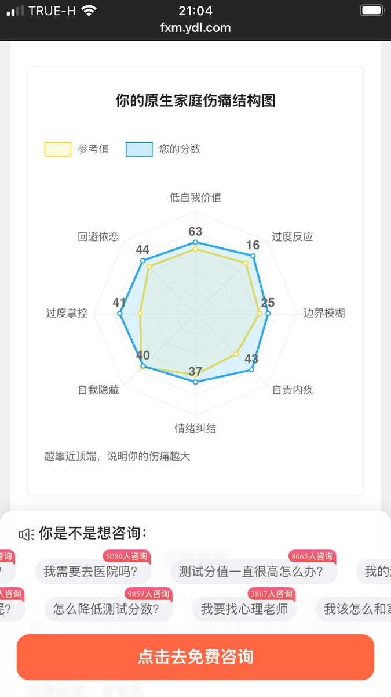
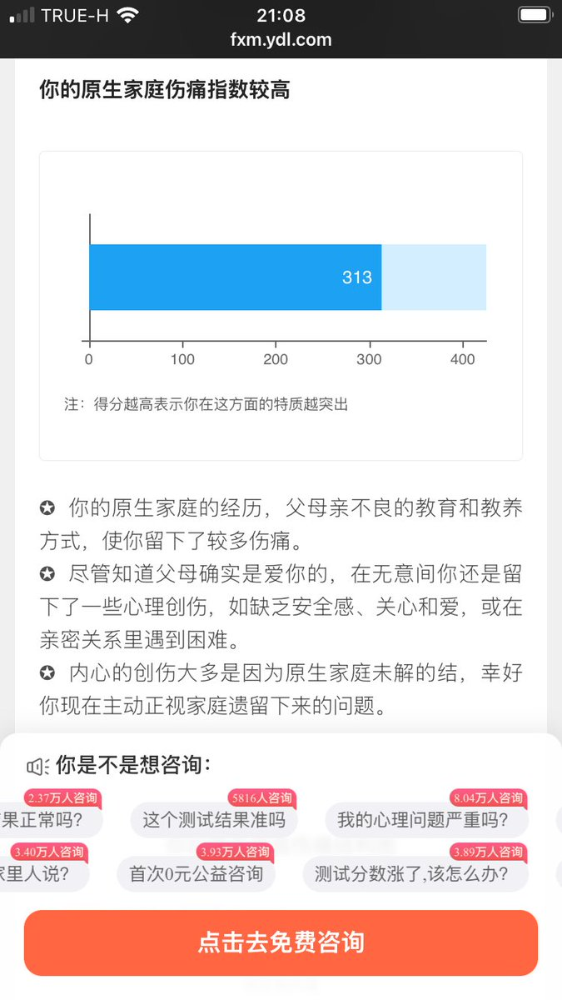
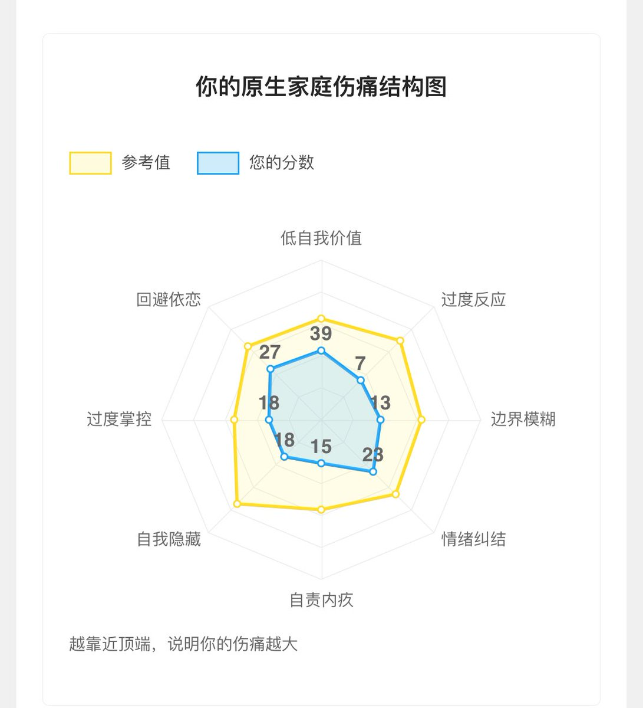
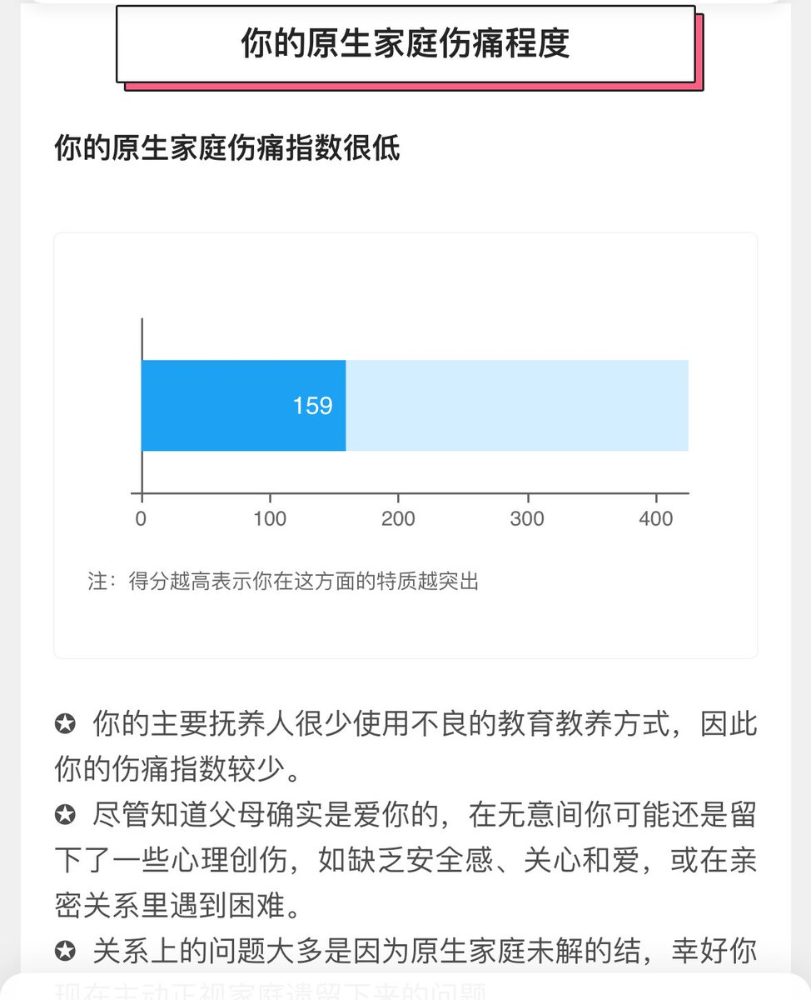

其实..给自己造成最大痛苦的应该是“主观情感极其强烈与此同时客观理性及其坚定但两者强烈的不一致”…而这个大概是测试没有考虑的吧…
just…自己就是糟糕的坏孩子吧…

just…自己就是糟糕的坏孩子吧…




阿巴阿巴…
自从那件事发生后，老妈已经和我已经坦诚了，她一直在学习如何成为不扫兴的大人，我一直在学习成为她骄傲的女儿，母女之外，也能处成某种意义的朋友了。
但是有一些东西还是改变不了，比如她至今认为麦当劳kfc完全不健康，认为国企央企铁饭碗稳定的生活比较好，想买房子，诸如此类 https://t.co/2IJi3W203d https://t.co/8aaVUjoxto
自从那件事发生后，老妈已经和我已经坦诚了，她一直在学习如何成为不扫兴的大人，我一直在学习成为她骄傲的女儿，母女之外，也能处成某种意义的朋友了。
但是有一些东西还是改变不了，比如她至今认为麦当劳kfc完全不健康，认为国企央企铁饭碗稳定的生活比较好，想买房子，诸如此类 https://t.co/2IJi3W203d https://t.co/8aaVUjoxto